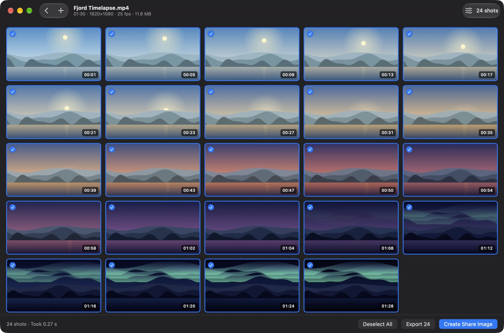
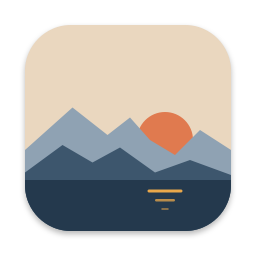
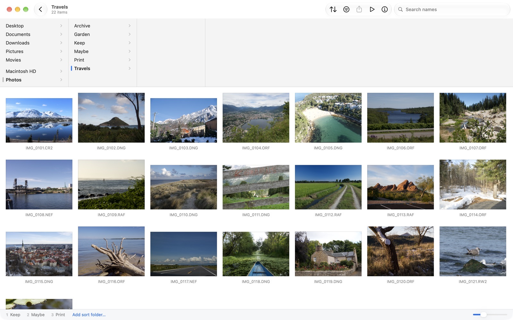
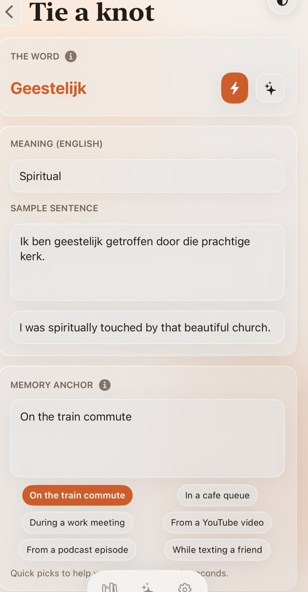
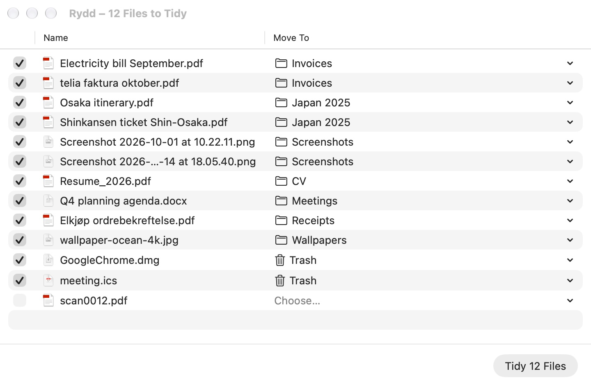

01
 Kvikkshot
Kvikkshot
macOS · Free
Screenshots from video in a blink, and one image to share them.

Kvikkshot →Made in Norway. Each one does a single everyday job well, works offline where it can, and keeps your data on your device.
Screenshots from video in a blink, and one image to share them.

Kvikkshot →
GlimtA fast photo viewer and sorter. Open a folder, look, press a number key.

Glimt →Language memories tied to real moments, turned into short stories you remember.

Echoknot →Keeps the folders you choose tidy, and moves only what you confirm.

Rydd →A handful of people working from Norway, the Netherlands, Belgium, Spain and Sweden, writing the app we wish we had.
No accounts where none are needed, no tracking, and nothing leaves your device unless you ask it to.